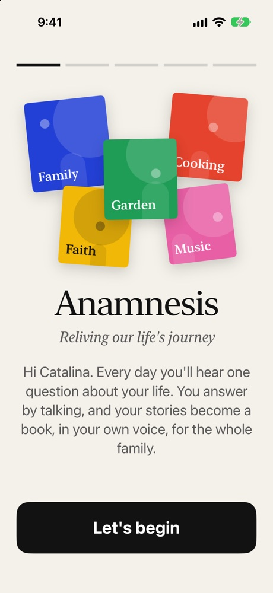
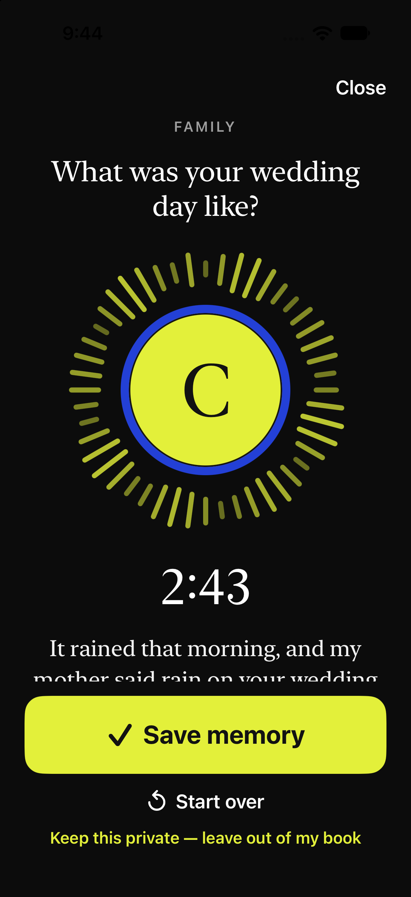
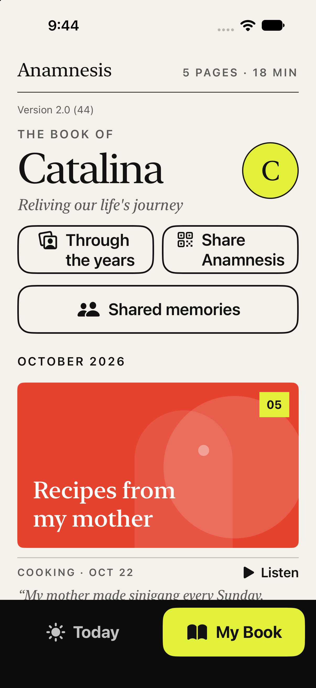

A gentle start.
They pick what they love, put their picture on the front of their book and choose when they'd like their question. Daily reminders start enabled; they can switch them off during setup or later at the top of Settings, where they can also change the reminder time. Every step is spoken aloud.

One gentle invitation.
A question or a photo, with room to talk. On supported iPhones, new questions can grow from memories already shared. Talk can quote earlier words when you ask for a reminder, and gives quiet speech more time before replying. Choose another whenever you like; games and music wait in More.
They just talk.
Their words appear as they speak. They can pause as long as they like; the app waits. One button when they're done.

Their book grows.
Every story becomes a page, by month, with their voice a tap away. Old photos get their stories told, too. Through the years shows whole photos with gentle fades.
